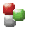
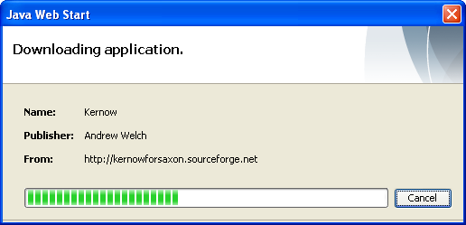
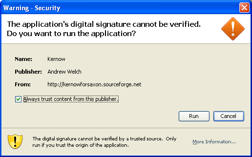
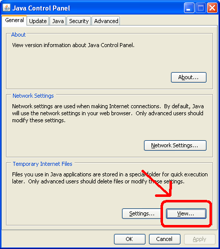
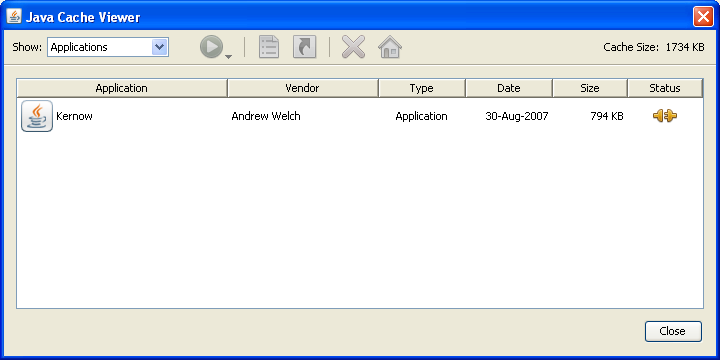
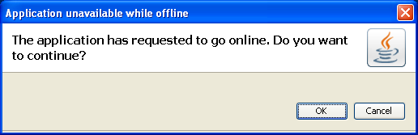

Kernow 1.6 beta - Java web start
To launch Kernow using
Java Web Start click the link above. When you launch using Java Web Start for the first time Kernow is downloaded to your machine, an icon is put on your desktop and an entry is added to your start menu. After that, you can run Kernow using either of the shortcuts or the link at the top of the page. When a new version of Kernow is released it's automatically downloaded to your machine ensuring you always have the latest version. (If you have any problems getting the latest version, or want to remove the JWS version of Kernow, follow the remove procedure below)
After clicking the link for the first time, or when an update is being downloaded, you will see the progress dialog below. The files are downloaded from SourceForge itself and not one of its mirrors, so it could take a few minutes.

Once Kernow has finished downloading, you'll be presented with the security check dialog. By default Java Web Start apps run in a sandbox which prevents access to your machine (to stop malicious code doing bad things) - because Kernow needs access to your computer, you need to click the "Run" button to allow it. You'll get this dialog every time you run Kernow using Java Web Start, unless you check the box 'Always trust content from this publisher'. Some people might call my code malicious :) but it's the same code running here as if you manually downloaded Kernow and ran the .jar or .exe, so there's nothing to worry about.

Removing the JWS version of Kernow
If you have any problems with the Java Web Start version of Kernow, just delete from the cache and download it again. To delete it from the from the local cache, go to control panel -> java and then click the view button on the general tab:

In the window which opens, select Kernow and then click the big X to remove it from you local cache. This should also remove the desktop icon and the entry in the start menu.

Then just re-download Kernow using the link at the top of the page.
If you ever see this dialog it means Java Web Start has detected a new version of Kernow and wants to download the latest files
